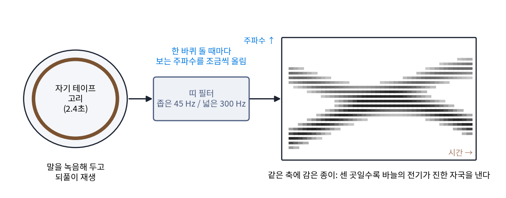
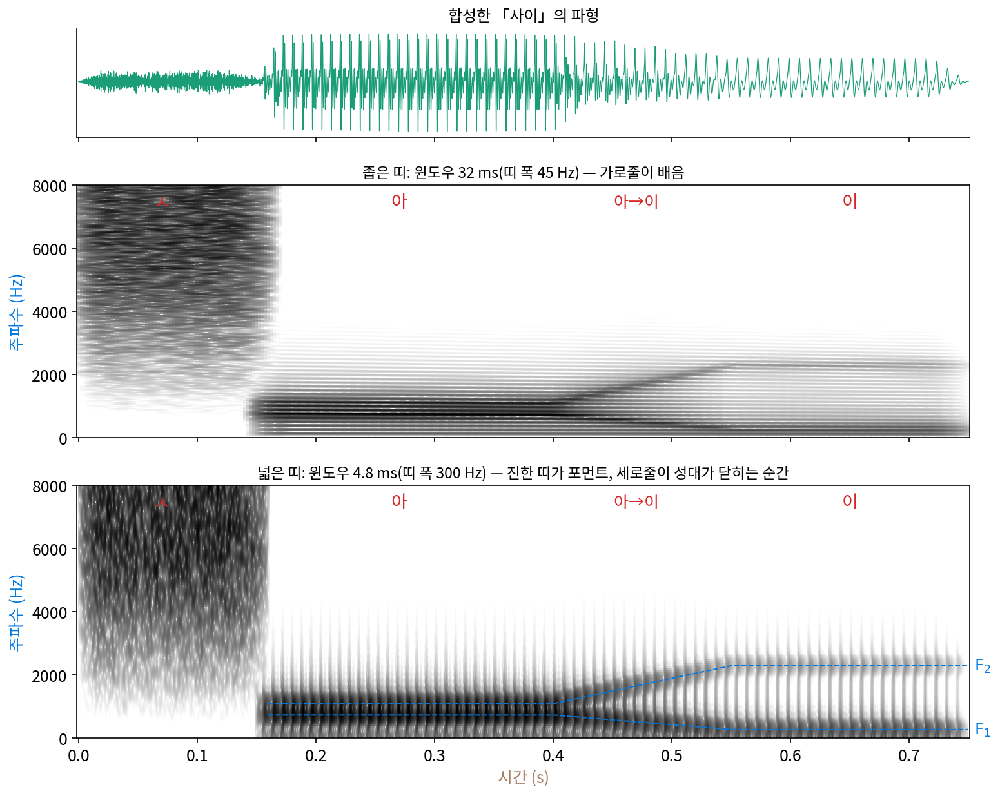

스펙트로그램 읽기: 봉우리의 자취를 시간 위에
모음 하나를 길게 끄는 소리는 거의 되풀이되므로 배음과 포먼트 그림 한 장이면 되지만, 말은 멈춰 있지 않다. 「사이」라고 말하면 처음 0.15초쯤은 쉬익 하는 노이즈(ㅅ)이고, 이어서 「아」의 봉우리가 「이」의 봉우리로 미끄러진다. 소리 전체를 한 번에 물결로 나누면 그 안에 어떤 주파수가 있었는지는 알아도 언제 있었는지는 사라진다. 짧은 구간마다 윈도우를 대고 세기를 구해 시간 순으로 늘어놓은 그림, 스펙트로그램이 그 「언제」를 되살렸다. 이번에는 그 그림을 읽는 법을 익힐 차례다. 윈도우의 길이를 바꾸면 같은 말소리가 전혀 다른 그림이 되는데, 무엇을 보려면 어떤 윈도우를 대야 할까?
역사: 「눈으로 보는 말」을 만든 기계
벨 전화 연구소의 쾨니그(W. Koenig), 던(H. K. Dunn), 레이시(L. Y. Lacy)는 1946년 7월 『미국 음향학회지』 18권 1호(19–49쪽)에 「소리 스펙트로그래프」를 발표했다. 논문은 앞선 시도들이 왜 모자랐는지부터 늘어놓는다. 모음의 한 주기마다 배음 세기를 따로 계산해 그래프로 잇는 방법(1934년 스타인버그의 논문)은 문장 하나를 그리는 데 「엄청난 시간과 품」이 들었다. 띠 필터 여러 개의 출력을 음극선관 화면에 번갈아 띄워 말소리의 무늬를 보여 주는 장치도 있었는데, 그 무늬를 보고 낱말을 알아보는 법을 익히려던 시도는 「거의 성공하지 못했다」. 띠 200개쯤의 출력 그래프를 윤곽대로 오려 나란히 쌓은 입체 모델도 만들었지만, 날마다 쓸 방법은 못 되었다. 그 모델이 담은 문장은 「귀가 들리지 않는 사람을 위한 보이는 전화(visual telephony for the deaf)」였다.

해법은 세 번째 차원(세기)을 종이의 진하기로 바꾸는 것이었다. 논문은 이 기본 방법을 같은 연구소의 포터(Ralph K. Potter)가 처음 제안했다고 밝힌다. 첫 실험 장치는 폭 200 Hz짜리 필터를 한 바퀴마다 손으로 50 Hz씩 옮겨 가며 그림을 찍었다. 이 실험은 미국이 전쟁에 뛰어들기 전에 했고, 군사적 쓸모 때문에 전쟁 연구로 지정되어 따로 완성형이 만들어졌다. 완성형은 마지막 2.4초의 소리를 회전판 위의 자기 테이프에 담고, 0~3500 Hz를 고른 눈금으로 훑었다. 말소리는 높은 쪽 세기가 약하므로, 녹음할 때 높은 주파수를 옥타브마다 약 6 dB씩 키워 고르게 보이게 했다. 논문은 필터 폭을 두고 고민한 과정도 적었다. 폭 45 Hz짜리 좁은 필터로는 배음 하나하나가 가로줄로 보이고, 남성 목소리 대부분은 200 Hz 폭이면 포먼트가 매끈한 띠로 보였다. 이들은 폭 300 Hz를 대부분의 목소리에 맞는 타협으로 골랐고, 넓은 필터에서 보이는 세로줄 무늬의 간격이 목소리의 음높이를 따라 변한다는 것도 짚었다.
이 기계로 찍은 그림을 사람이 읽어 말을 알아듣게 하려는 연구는 이듬해 포터, 코프(George A. Kopp), 그린(Harriet C. Green)의 책 『보이는 말(Visible Speech)』(1947)로 묶였다. 청각 장애인이 말을 눈으로 읽게 하려는 목표가 있었다. 그 훈련이 실제로 얼마나 성과를 냈는지는 믿을 만한 자료로 확인하지 못했다(불명). 책 제목은 전화를 발명한 그레이엄 벨의 아버지 알렉산더 멜빌 벨이 1867년에 내놓은 발음 기호 체계의 이름과 같다. 오늘날 음성학자와 음성 인식 연구자가 날마다 들여다보는 그림이 이 기계에서 나왔다.
합성한 「사이」를 두 윈도우로
이 장의 합성기로 0.75초짜리 「사이」를 만들었다. 0~0.15초는 5500 Hz 근처를 키운 노이즈(ㅅ), 0.15~0.40초는 「아」, 0.40~0.55초 동안 두 봉우리가 「아」에서 「이」로 미끄러지고, 0.55~0.75초는 「이」다. 기본 주파수는 말끝이 내려가는 흔한 억양을 흉내 내어 130 Hz에서 110 Hz로 고르게 내린다. 칸 신호 x[n]에 윈도우 w를 대고 세기를 구한 그림은 다음과 같았다.
윈도우의 길이가 띠 폭을 정한다. 한 윈도우의 세기가 절반(3 dB 아래)으로 떨어지는 띠 폭은 1.44 ÷ 윈도우 길이쯤이다. 윈도우가 길수록 띠가 좁다. 아래 그림은 같은 「사이」를 긴 윈도우(32 ms)와 짧은 윈도우(4.8 ms)로 그렸다. 두 윈도우 길이는 1946년 기계의 좁은 필터와 넓은 필터에 맞춰 골랐다(어떻게 맞췄는지는 문제 8에서 셈한다). 높은 쪽 세기가 약한 목소리를 잘 보이게 하려고, 1946년 기계처럼 분석 전에 높은 쪽을 옥타브마다 약 6 dB 북돋웠다.

좁은 띠 그림에서는 「아」와 「이」가 촘촘한 가로줄 묶음으로 보이는데, 줄 하나하나가 배음이다. 0.20초에서 1600 Hz 아래에 가로줄이 12개 있고 간격의 평균은 124.6 Hz(그 시각의 참 기본 주파수 124.7 Hz)이니, 줄 간격이 그대로 기본 주파수다. 넓은 띠 그림에서는 배음 줄이 뭉개지고 대신 진한 띠가 보인다. 0.47초에서 띠의 봉우리는 500 Hz와 1625 Hz로, 그 순간 합성에 쓴 515 Hz와 1650 Hz를 따라간다. 0.65초 「이」에서는 250 Hz와 2281 Hz다. 진한 띠 위로는 세로줄이 촘촘히 서 있는데, 성대가 닫힐 때마다 생기는 짧은 충격이 짧은 윈도우에 하나씩 잡힌 것이다. 맨 앞의 ㅅ은 줄도 띠도 없이 4000 Hz 위에 넓게 퍼진 얼룩이다(4000 Hz 위의 세기가 그 순간 전체의 99%).
넓은 띠 그림은 0.30초의 「아」에서 봉우리를 750 Hz 하나로만 보여 준다. 730 Hz와 1090 Hz는 360 Hz밖에 떨어져 있지 않은데, 짧은 윈도우의 띠 폭이 그 간격에 견줄 만큼 넓어서 두 봉우리가 한 띠로 붙었다. 짧은 윈도우로 시간을 또렷하게 얻은 대가로 주파수를 잃은 것이다. 짧은 윈도우로 그려 포먼트를 띠로 보이게 한 그림을 넓은 띠 스펙트로그램 (포먼트를 보는 그림 / wideband spectrogram), 긴 윈도우로 배음을 가로줄로 보이게 한 그림을 좁은 띠 스펙트로그램이라 한다. 말소리를 읽을 때는 두 그림을 함께 본다.
| 그림에서 보이는 것 | 소리에서 무엇인가 | 어느 그림에서 잘 보이나 |
|---|---|---|
| 촘촘한 가로줄과 그 간격 | 배음과 기본 주파수 | 좁은 띠(긴 윈도우) |
| 굵고 진한 띠와 그 움직임 | 포먼트, 곧 입 모양의 변화 | 넓은 띠(짧은 윈도우) |
| 일정한 간격의 세로줄 | 성대가 한 번씩 닫히는 순간 | 넓은 띠 |
| 줄 없는 넓은 얼룩 | ㅅ·ㅎ 같은 노이즈 소리 | 둘 다 |
ML에서: 소리를 줄였다 되살리는 신경망은 스펙트로그램으로 채점한다
신경 오디오 코덱은 녹음을 아주 적은 숫자로 줄였다가 다시 파형으로 되살리는 신경망이다. 메타의 데포세(Alexandre Défossez)와 동료들이 2022년에 낸 EnCodec 은 24 kHz 녹음을 1초에 1.5~24킬로비트로 줄인다. 되살린 소리가 원래 소리와 얼마나 다른지 재는 손실의 한 부분은 파형의 칸끼리가 아니라 64칸 멜 스펙트로그램끼리의 차이이고, 윈도우 길이를 2⁵(32)칸부터 2¹¹(2048)칸까지 일곱 가지로 바꿔 가며 모두 견준다. 짧은 윈도우의 차이는 넓은 띠 그림끼리, 긴 윈도우의 차이는 좁은 띠 그림끼리의 차이다. 글을 소리로 읽어 주는 음성 합성 모델 다수도 먼저 멜 스펙트로그램을 만들고, 그 그림을 파형으로 바꾸는 신경망(보코더)을 따로 둔다. 스펙트로그램은 세기만 남기고 위상을 버린 그림인데, 세기만으로 파형을 되살릴 수 있을까? 아래 문제 9에서 직접 해 본다.
문제 7. 두 그림으로 음높이를 두 번 재기
노래방 화면에는 부르는 음높이가 막대 하나로만 나온다. 합성한 「사이」의 두 스펙트로그램으로 음높이를 직접 재 보자. (가) 좁은 띠 그림의 0.20초에서는 1600 Hz 아래 가로줄이 12개, 간격 124.6 Hz였다. 0.70초에서는 가로줄이 몇 개이고 간격은 얼마인가? 음높이는 어떻게 변했나? (나) 넓은 띠 그림에서 0.20~0.30초 사이의 세로줄을 세면 몇 개이고, 음높이로는 얼마인가? (다) 두 방법은 왜 같은 것을 재는가?

(가)는 0.20초에 12개, 간격 124.6 Hz, 0.70초에 14개, 간격 111.5 Hz예요. 줄이 늘었으니까 소리가 더 풍부해지고 높아진 거 아니에요?

같은 1600 Hz 칸 안에 줄이 더 많이 들어가려면 줄 간격이 어때야 하죠?

좁아야 해요. 아, 간격이 음높이니까 줄이 늘면 오히려 낮아진 거예요. 124.6 Hz에서 111.5 Hz로 내려갔어요.

(나)는 0.1초 동안 세로줄이 12개니까 1초에 약 120번, 120 Hz야. 그 구간의 참값 평균은 123.3 Hz고. 세로줄은 성대가 닫히는 순간이니까 세로줄 사이 시간이 한 주기야.

(다)는요? 가로줄 간격은 주파수 축에서, 세로줄 간격은 시간 축에서 쟀어요.

8 ms마다 되풀이되는 소리는 배음 간격이 125 Hz였어요. 시간에서의 되풀이 간격과 주파수에서의 줄 간격은 서로 역수라서, 긴 윈도우는 줄 간격을 보고 짧은 윈도우는 되풀이 간격을 보는 것뿐이에요. 같은 성대의 떨림을 두 축에서 잰 거예요.

출석부로 한 달 결석 횟수를 세나 달력에서 결석한 날 사이 간격을 재나 결국 같은 결석 습관을 재잖아요. 줄 간격 f₀ 와 되풀이 간격 1/f₀ 도 그런 사이네요.
문제 8. 1946년 기계는 왜 300 Hz를 골랐을까
윈도우 길이가 L 이면 한 윈도우의 띠 폭은 약 1.44/L 이다. (가) 배음 간격 125 Hz 인 남성 목소리에서 배음을 가로줄로 가르려면(띠 폭 < 배음 간격) 윈도우가 몇 ms보다 길어야 하는가? (나) 1946년 기계의 45 Hz, 300 Hz 필터는 윈도우 몇 ms에 해당하는가? 300 Hz 필터로 남성 목소리를 보면 무엇이 보이는가? (다) 「대부분의 남성 목소리」라는 조건을 빼고, 기본 주파수 300 Hz 인 아이 목소리를 300 Hz 필터로 보면 어떻게 되는가? (라) Whisper 의 윈도우 400칸(16 kHz)은 어느 쪽 그림에 가까운가?
(가)는 1.44 ÷ L < 125를 풀면 L > 11.5 ms예요. 스크립트로 띠 폭을 직접 재면 185칸, 11.6 ms부터요. (나)는 45 Hz가 32 ms, 300 Hz가 4.8 ms요. 4.8 ms 윈도우면 배음은 못 가르고 포먼트 띠가 보이겠네요.
(다)는 아이 목소리도 포먼트 띠가 보이겠지. 필터 폭이 같으니까.
아이 목소리는 배음 간격이 얼마죠? 4.8 ms 윈도우의 띠 폭과 견줘 봐요.

배음 간격이 300 Hz고, 띠 폭은… 299 Hz예요. 거의 같네요.

같으면 줄이 갈려 보이는 거야, 안 갈리는 거야?

경계라서 반쯤 갈려 보일 것 같아. 포먼트 띠가 매끈하지 않고 줄 자국이 남은 띠가 되겠지.
1946년 논문이 높은 목소리를 두고 적은 말과 견줘 볼래요?

높은 목소리에서 띠가 계단처럼 보여 보이는 말에는 좋지 않다고 적은 게 이거군요.

그래요. 300 Hz는 「대부분의 목소리」에서 배음을 뭉갤 만큼 넓고 시간도 너무 흐리지 않게 고른 타협이었어요. 목소리가 높을수록 더 넓은 필터, 곧 더 짧은 윈도우가 필요하죠. (라)는요?

400칸이면 25 ms, 띠 폭 57.6 Hz라서 125 Hz 목소리의 배음을 가르는 좁은 띠 쪽이에요. 간격은 160칸, 10 ms마다 한 번씩이고요. Whisper 는 포먼트 띠보다 배음 줄이 보이는 그림을 받는 거네요.

해석학에서 함수를 좁게 모으면 푸리에 변환이 넓게 퍼지던 성질을 윈도우 길이와 띠 폭으로 다시 본 거야.
문제 9. 세기만 남은 그림에서 소리 되살리기
「사이」를 윈도우 512칸, 간격 128칸으로 나눠 세기 |X| 만 남기고 위상은 버렸다. 그리핀(Daniel W. Griffin)과 림(Jae S. Lim)이 1984년에 낸 방법은 무작위 위상에서 시작해 ① 세기 |X| 와 지금의 위상으로 파형을 만들고 ② 그 파형의 스펙트로그램에서 위상만 가져오는 일을 되풀이한다. (가) 세기 오차(스펙트로그램 세기의 상대 오차) ‖|X| − |X̂|‖ ÷ ‖|X|‖ 를 dB로 재면 되풀이 0, 10, 50, 200번에서 얼마인가? (나) 200번 뒤 파형을 원래 파형과 칸마다 빼 보면 신호 대 오차가 −1.7 dB 로, 원래 신호보다 오차가 더 크다. 실패한 것일까? (다) 원래 파형의 부호를 뒤집은 −x 의 세기 오차와 신호 대 오차는? 신경 보코더가 이 문제에서 무엇을 대신 해 주는가?
(가)는 −3.6 dB, −12.3 dB, −16.9 dB, −24.8 dB요. 되풀이할수록 잘 맞아요. 그런데 (나)는 파형이 원래 신호보다 더 틀렸으니까 실패죠. 소리도 엉망이겠네요.
(다)부터 계산해 봐요. −x 는 귀에 어떻게 들리죠?

세기 오차는 0이에요. 세기는 완전히 같아요. 그런데 신호 대 오차는 −6.0 dB로 (나)보다도 나빠요. 듣기에는 원래 소리랑 똑같을 텐데요.
칸마다 빼서 비교하는 잣대가 틀렸던 거야. 부호나 위상이 달라도 같은 세기 그림을 내는 파형이 많은데, 귀는 세기 그림에 가까운 쪽을 듣잖아. 세기 오차 −24.8 dB면 세기 그림은 꽤 맞은 거야.
그럼 세기만 맞추면 늘 원래 소리처럼 들릴까요? 그리핀–림으로 되살린 소리는 흔히 「쇳소리가 섞였다」는 평을 들어요.
세기가 같은 파형이 여럿이면 그중 아무거나 고르게 되는데, 윈도우가 겹치는 이웃 구간끼리 위상이 서로 맞아야 자연스러운 소리가 돼요. 무작위에서 출발해 조금씩 맞춘 위상은 그 이음매가 어딘가 어긋날 수 있어요.

그래서 보코더가 필요하군요. 세기 그림은 주어졌으니 「진짜 목소리라면 이런 위상이었겠다」를 녹음 수천 시간에서 배워 채우는 거고요. 코덱도 결국 그 일을 해야 하니까 손실을 파형 칸끼리가 아니라 스펙트로그램끼리로 잰 거네요.
그래요. 스펙트로그램은 귀가 듣는 것에 가깝게 정보를 남기고, 남기지 않은 위상은 다른 방법이 채워야 해요.
과제 채점에서 답만 남기고 풀이 과정은 버렸다가 풀이를 다시 써 오라고 하면 사람마다 다른 풀이가 나오잖아요. 답이 세기, 풀이가 위상에 해당해요.